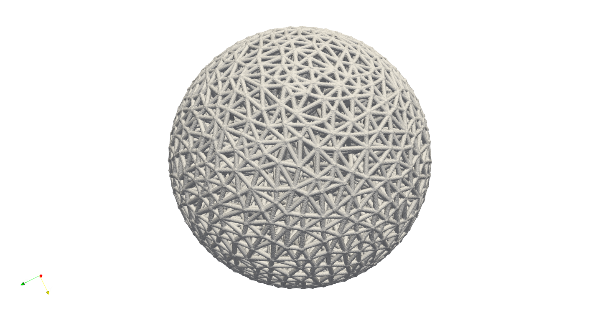
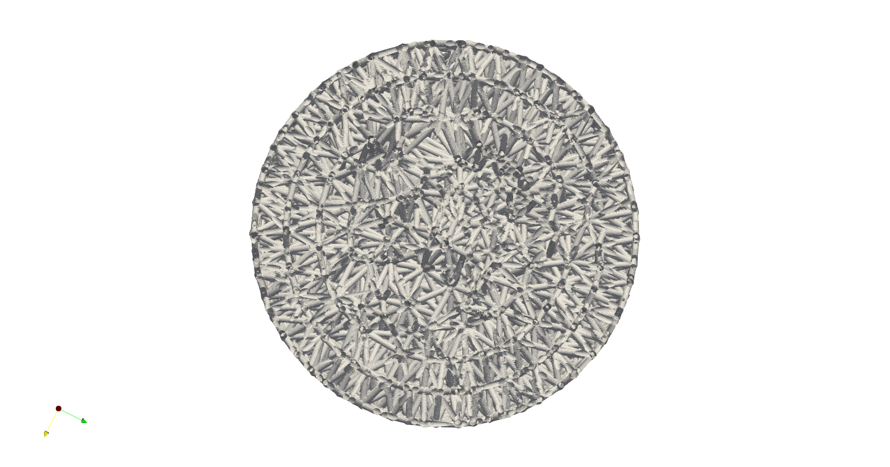
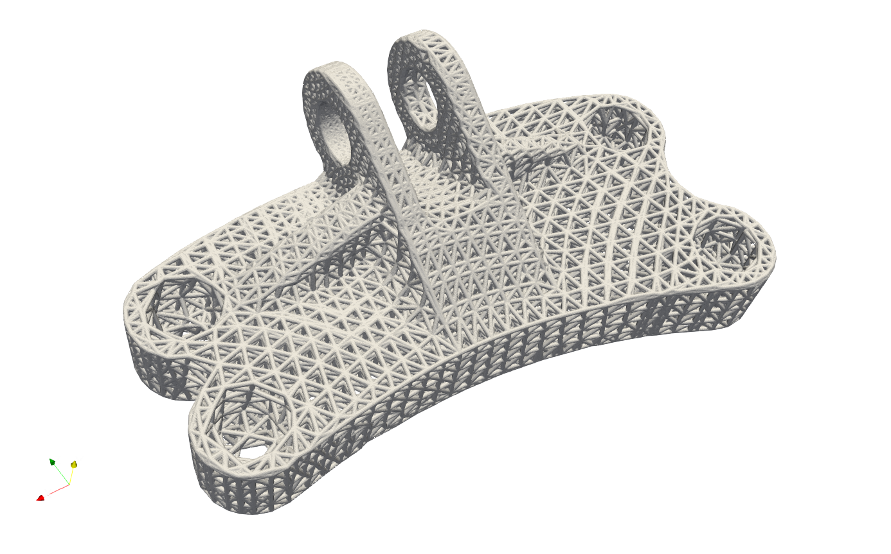
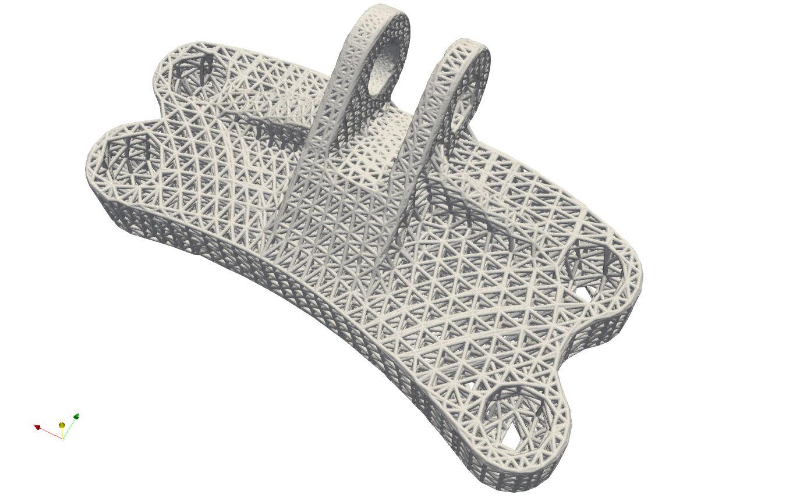
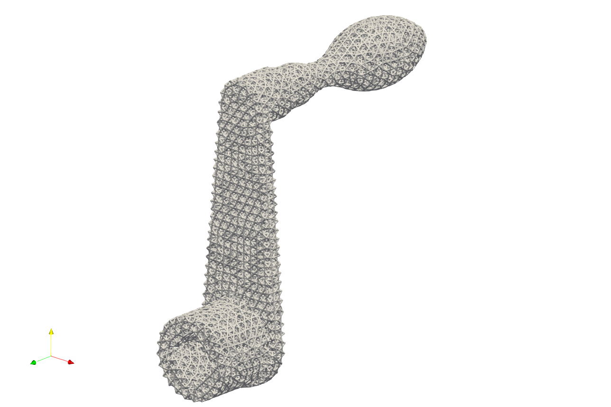
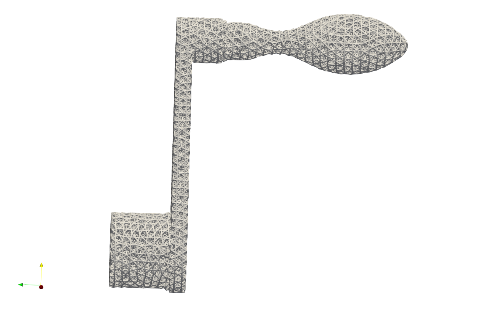
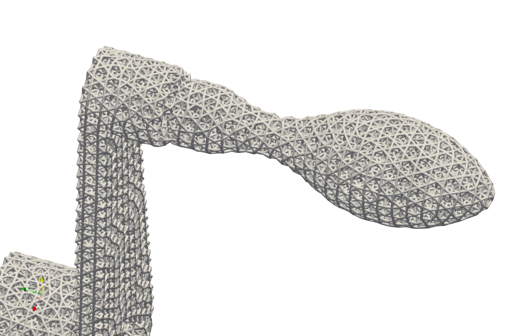

Meshing 02#
Mesher for tetrahedron elements may be more useful for creating the mesh conforming complex geometry. This chapter presents two sets of the mesher, the mesher with uneven tetrahedron elements size, and the mesher for more uniformly same, or similar size of tetrahedron shape.
Tetrahedron Mesher#
Artisan has an integrated simple tetrahedron elements mesher that automatically meshes the given geometry using Delaunay triangulation algorithm. This basic meshing algorithm discretize the geometry layer-by-layer that conforms the geometric shape. The following JSON, that stores at the file GenTetBasicMesh.json, meshed a sphere with the radius of 600 mm and generated the mesh lattice by using the exactly same mesh.
{"Setup":{ "Type" : "Geometry",
"Geomfile": ".//sample-obj//Ball_Mesh.STL",
"Rot" : [0.0,0.0,0.0],
"res":[5.0,5.0,5.0],
"Padding": 4,
"onGPU": false,
"memorylimit": 16106127360
},
"WorkFlow":{
"1": {"Gen_TetBasicMesh":{
"Geomfile": ".//sample-obj//Ball_Mesh.STL",
"size": [100.0,100.0,100.0],
"Meshfile": ".//sample-obj//Ball_Mesh.med",
"ConvertTet2Beam": true
}
},
"2": {"Add_Lattice":{
"la_name": ".//Test_json_03//GenTetBasicMesh.mld",
"size": [150.0,150.0,150.0], "thk":10.0, "Rot":[0.0, 0.0, 0.0], "Trans":[0.0, 0.0, 0.0],
"Inv": false, "Fill": false, "Cube_Request": {}
}
},
"3": {
"Export": {"outfile": ".//Test_results/BallBasicTetNMesh_Lattice.stl"}
}
},
"PostProcess":{"CombineMeshes": true,
"RemovePartitionMeshFile": false,
"RemoveIsolatedParts": true,
"ExportLazPts": true}
}
The keywords Gen_TetBasicMesh activates the algorithm. The parameter "Geomfile" defines the location of the target meshing geometry, Meshfile indicates where the mesh would be stored. Currently it supports Abaqus inp, Ansys fluent msh and Salome med file format. The parameter "size" defines the lattice size at current layer as
num_{nodes} is the number of nodes at current layer, and they were evenly and randomly distributed over the current layer surface. The value size[2], which is the third element in size, defines the layer depth, here 100 mm depth. The parameter ConvertTet2Beam is boolean type definition, that "true" meant the mesher will convert generated tetrahedron to the beam element (a 2-node-strut-like element), false will keep tetrahedron element. One of the benefits is user may import the beam element into the FEA solver for further analysis if the mesh lattice is desired.
Above JSON produced a mesh lattice filled ball geometry as shown below.
The cross-sectional view below clearly showed the lattices were stacked layer by layer, from exterior surface towards center.
For the more complicated case, user may refer to the example in the file EngineBracket_GenTetBasicMesh.txt.
Please note that, this simple mesher may apply to the geometry with less dramatic change and more continuously smooth surface change. The quality of mesh may vary depending on the geometry features and definitions of mesh size etc.. For more complex mesh pattern, user may consider use professional mesher and import the results as input in mesh lattice generation workflow. Or user shall use the Gen_TetBasicMesh_HexSplit to generate a better evenly sized or controlled-size mesh in order to fit the geometric shape.
The Gen_TetBasicMesh_HexSplit keyword shares the same parameters with Gen_TetBasicMesh. This mesher accepts the nodes of the Cartesian Hex Mesh (refer to the Cartesian Mesher section) as input vertices and applies the tetrahedron algorithm to generate all tetrahedral elements. Users can refer to the example GenTetBasicMesh_HexSplit.json, as illustrated below. One advantage of this method is that the mesher produces approximately evenly spaced vertices that are distributed across the shape’s surface and volumetric domain.
Similar to Gen_BasicCartesianHexMesh_MultiSize, the local mesh variation can be included as well. The example in the file EngineBracket_MultiSize\EngineBracket_GenTetBasicMesh_HexSplit_MS.json shows a more complicated case, the Engine Bracket model with a local attractor controlled mesh size.
{"Setup":{ "Type" : "Geometry",
"Geomfile": ".//sample-obj/EngineBracket.stl",
"Rot" : [0.0,0.0,0.0],
"res":[0.30, 0.30, 0.30],
"Padding": 4,
"onGPU": false,
"memorylimit": 16106127360
},
"WorkFlow":{
"1": {"Gen_TetBasicMesh_HexSplit":{
"Geomfile": ".//sample-obj/EngineBracket.stl",
"size": [6.0, 6.0, 6.0],
"Meshfile": ".//Test_json//MeshLattice//EngineBracket_MultiSize//EngineBracket.med",
"ConvertTet2Beam": false,
"MultiSize":{"Type":"Attractor", "Data":[[105, 45, 90, 100, 0.9]]}
}
},
"2": {"Add_Lattice":{
"la_name": ".//Test_json//MeshLattice//EngineBracket_MultiSize//GenTetBasicMesh.mld",
"size": [12.0, 12.0, 12.0], "thk":0.7,
"Rot":[0.0,0.0,0.0], "Trans":[0.0,0.0,0.0], "Inv": false, "Fill": false,
"Cube_Request": {}
}
},
"3":{
"Export": {"outfile": ".//Test_results/EngineBracket_BasicTetHexSplit_MS.stl"}
}
},
"PostProcess":{"CombineMeshes": true,
"RemovePartitionMeshFile": false,
"RemoveIsolatedParts": true,
"ExportLazPts": true}
}
The area on the left of Bracket ring has higher mesh density, or smaller mesh size, whereas other region has comparatively bigger mesh size.
 For comparison, below shows the mesh without the local attractors, the example file is at EngineBracket\EngineBracket_GenTetBasicMesh_HexSplit.json.
Implicit Tetrahedron Mesher#
Artisan integrates an simple implicit based tetrahedron mesher that generates uniform size elements (infill domain for unit lattice). This mesher is able to capture the geometrical features, such as corner or sharp edges, that can produce better quality tet mesh which are evenly distributed over the geometry domain. User may find the example below at .\Test_json\MeshLattice\TetwF\crankhandleTetMesher.json.
{
"Setup": {
"Type": "Geometry",
"Sample": {
"Domain": [[0.0, 1.0], [0.0, 1.0], [0.0, 1.0]],
"Shape": "Box"
},
"Geomfile": ".//sample-obj//crank_handle.stl",
"Rot": [0.0, 0.0, 0.0],
"res": [0.1, 0.1, 0.1],
"Padding": 4,
"onGPU": false,
"memorylimit": 1073741824000
},
"WorkFlow": {
"1": {
"Gen_TetBasicMesh_wFeature": {
"Meshfile": ".//Test_json//MeshLattice//TetwF//crank_handle.inp",
"Geomfile": ".//sample-obj//crank_handle.stl",
"init_seed_size": [2.0, 2.0, 2.0],
"convergence_tol": 0.01,
"max_iter": 100,
"elem_size": 2.0
}
},
"2": {
"Add_Lattice": {
"la_name": ".//Test_json//MeshLattice//TetwF//TetConformal.mld",
"size": [2.0, 2.0, 2.0],
"thk": 0.2,
"Rot": [0.0, 0.0, 0.0],
"Trans": [0.0, 0.0, 0.0],
"Inv": false,
"Fill": false,
"Cube_Request": {}
}
},
"10000": {
"Export": {
"outfile": ".//Test_results//crankhandle_tet_infill.stl"
}
}
},
"PostProcess": {
"CombineMeshes": true,
"RemovePartitionMeshFile": false,
"RemoveIsolatedParts": true,
"ExportLazPts": false
}
}
The keyword Gen_TetBasicMesh_wFeature defines the mesh generation.
Parameter |
Details |
|---|---|
|
The skin mesh inputs file, if empty, Artisan will take the Geomfile in setup; |
|
The export file for generated tet mesh; |
|
The parameter defines the initial nodes points placements within the bounding box of the geometry; |
|
The target element size, please note that the final mesh may not reach to this size due to number of nodes placed over the domain; |
|
The tolerance of the convergence for mesh generation, recommend the value of |
|
The maximum iteration for mesh generation, recommend |
Above example produces a tetrahedron mesh based infill.
  Note that, the keyword Gen_TetBasicMesh_wFeature does not support the varying size of the elements in the current version, but it shall be supported in future development.